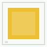
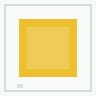
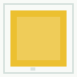
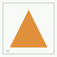
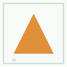
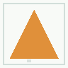
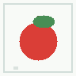

一句话结论
这一步证明：APV3 已经可以把 Phase 14 的课程材料跑成可检查的逐 tick 学习回放，并用网页展示“题目、材料、内部学习包、来源标记、Q 倾向、最终输出”。这不是一张静态宣传图，而是由 runtime 生成 trace，前端只负责渲染。
AP 内部流程怎么读
像是 黄。案例 1：颜色“黄”
题目内容
这组材料在教什么颜色？训练材料是几张合成黄色图，held-out 是未见过的黄色变体，contrast 是对照材料。



| tick | AP 内部过程 | Q 倾向 | 输出 |
|---|---|---|---|
| 1 | 课程材料进入，来源为 COURSE_REPLAY_ASSET，marker 为 PERCEIVED | 1.0 | 看到训练材料 |
| 2 | 形成 LearningPacket，content/source/feeling 三路进入 SDPL | 1.0 | 把材料和中性标签联结 |
| 3 | held-out 探测：未见黄色变体仍得到同类倾向 | 1.0 | 未见材料仍能得到同类倾向 |
| 4 | contrast 对照：干扰项被单独标记 | 0.0 | 干扰项被单独标记为对照 |
| 5 | 行动竞争：课程倾向进入回应候选 | 1.0 | 课程倾向进入可解释输出候选 |
| 6 | 提交可审计回应 | 1.0 | 像是 黄 |
案例 2：形状“三角”
题目内容
这组材料在教什么形状？AP 看到三角形训练材料后，用未见三角变体做 held-out 探测。



| tick | AP 内部过程 | Q 倾向 | 输出 |
|---|---|---|---|
| 1 | 课程材料进入 | 1.0 | 看到训练材料 |
| 2 | 形成 SDPL 学习包 | 1.0 | 把材料和中性标签联结 |
| 3 | held-out 探测通过 | 1.0 | 未见材料仍能得到同类倾向 |
| 4 | contrast 对照分离 | 0.0 | 干扰项被单独标记为对照 |
| 5 | 行动竞争 | 1.0 | 课程倾向进入可解释输出候选 |
| 6 | 提交回应 | 1.0 | 像是 三角 |
案例 3：日常物体“苹果”
题目内容
这组材料在教什么日常物体？AP 不是读文件名回答，前端也没有答案表；页面展示的是 runtime 返回的 tick trace。

| tick | AP 内部过程 | Q 倾向 | 输出 |
|---|---|---|---|
| 1 | 课程材料进入 | 1.0 | 看到训练材料 |
| 2 | 形成 SDPL 学习包 | 1.0 | 把材料和中性标签联结 |
| 3 | held-out 探测通过 | 1.0 | 未见材料仍能得到同类倾向 |
| 4 | contrast 对照分离 | 0.0 | 干扰项被单独标记为对照 |
| 5 | 行动竞争 | 1.0 | 课程倾向进入可解释输出候选 |
| 6 | 提交回应 | 1.0 | 像是 苹果 |
案例 4：声音“轻声呼唤”
题目内容
这组声音材料在教什么模式？音频材料和图像材料走同样的课程回放框架，只是感受通道不同。
| tick | AP 内部过程 | Q 倾向 | 输出 |
|---|---|---|---|
| 1 | 课程音频进入，source 仍是可审计课程资产 | 1.0 | 看到训练材料 |
| 2 | 形成 SDPL 学习包 | 1.0 | 把材料和中性标签联结 |
| 3 | held-out 音频探测通过 | 1.0 | 未见材料仍能得到同类倾向 |
| 4 | contrast 音频对照分离 | 0.0 | 干扰项被单独标记为对照 |
| 5 | 行动竞争 | 1.0 | 课程倾向进入可解释输出候选 |
| 6 | 提交回应 | 1.0 | 像是 轻声呼唤 |
案例 5：反馈信号“对”
题目内容
这组材料在教什么反馈信号？这类材料未来可以接到奖励/惩罚与自然纠错体验里。
| tick | AP 内部过程 | Q 倾向 | 输出 |
|---|---|---|---|
| 1 | 课程材料进入 | 1.0 | 看到训练材料 |
| 2 | 形成 SDPL 学习包 | 1.0 | 把材料和中性标签联结 |
| 3 | held-out 探测通过 | 1.0 | 未见材料仍能得到同类倾向 |
| 4 | contrast 对照分离 | 0.0 | 干扰项被单独标记为对照 |
| 5 | 行动竞争 | 1.0 | 课程倾向进入可解释输出候选 |
| 6 | 提交回应 | 1.0 | 像是 对 |
这证明了什么
第一，课程材料不是散乱文件，而是 manifest 管理的资产；第二，AP 的回放不是前端写死答案，而是 runtime 生成的 tick trace；第三，held-out 未见材料和 contrast 干扰项在回放里被分开处理；第四，Web 工作台已经能把“材料进入、学习包、来源标记、Q 倾向、最终输出”这条链展示给普通读者。
当前边界
Phase 15 证明的是“课程回放工作台 + 5 个短课程 trace + 可审计展示”成立。它还不是完整公开发布版，也不宣称 AP 已经掌握全部基础词汇、完整数学课程、真实外部素材库或长期真实用户训练。下一步可以基于这个工作台跑更长课程，并把后续风格化表达语料接进来。